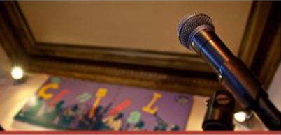
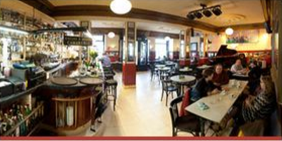

| Carta | Programa | Reservas |

|
 |  |
|
Descubre nuestra amplia carta elaborada por Micky, nuestro |
Aquí conocerás nuestra programación mensual,con todos |
Reservamos cada día a mitad del aforo. Consulta el plano y |